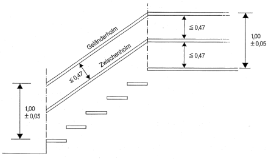

Treppen bei Bauarbeiten müssen sicher begehbar sein.
6.2.1 Treppen bei Bauarbeiten müssen in ihren Abmessungen der Tabelle 1 entsprechen.
6.2.2 Abweichend von Abschnitt 6.2.1 muß die Stufenlänge I bei Spindel und Wendeltreppen mindestens 0,70 m betragen.
6.2.3 In Bautreppen und Treppentürmen ist nach höchstens 5 m Höhenunterschied ein Podest anzuordnen.
6.2.4 In Gerüsttreppen ist nach höchstens 5 m Höhenunterschied die Laufrichtung der Treppe zu ändern oder ein Podest von mindestens einer Gerüstfeldlänge anzuordnen.
| Kurz- zeichen |
Bezeichnung | Bautreppe und Treppenturm |
Gerüsttreppe | |
| 1 | α |
Neigung |
30° bis 55° |
|
| 2 |
Schrittmaß |
63 cm ± 10% |
||
| 3 | s |
Steigung |
19 cm ≤ s ≤ 25 cm |
|
| 4 | b |
Stufenbreite |
≥ 21 cm |
≥ 12,5 cm |
| 5 | l |
Stufenlänge |
≥ 60 cm |
≥ 50cm |
| 6 | g |
Versatz |
0 |
0 ≤ g ≤ 5 cm |
| 7 | u |
Unterschneidung |
≤ 3 cm |
unzulässig |
| 8 | h |
lichte |
≥ 190 cm |
≥ 180 cm |
| 9 | tp |
Podestbreite |
≥ 60cm |
≥ 30 cm |
Tabelle 1: Abmessungen für Treppen bei Bauarbeiten
6.2.5 An Übergängen von Treppen bei Bauarbeiten zu anderen Bauteilen darf der Höhenunterschied 25 cm nicht überschreiten.
6.2.6 An freiliegenden Treppenläufen und Podesten mit mehr als 1,00 m Absturzhöhe ist Seitenschutz, bestehend aus Geländer- und Zwischenholm in Abmessung und Ausführung nach DIN 4420-1 oder den "Regeln für die Sicherheit von Seitenschutz und Schutzwänden als Absturzsicherung bei Bauarbeiten" (ZH1/584) anzubringen.

Bild 2: Seitenschutz an Treppen bei Bauarbeiten
6.2.7 Abweichend von Abschnitt 6.2.6 darf an Treppen bei Bauarbeiten, die unmittelbar vor Arbeits- und Schutzgerüsten mit höchstens 2,00 m Belagflächenabstand errichtet werden, auf den gerüstseitigen Seitenschutz verzichtet werden.